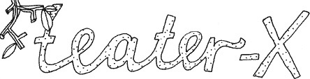

| dunst Recommends: | 25. April 2007 |
X vil det første halve leveår Derfor inviterer vi til SEMINAR og workshop SØNDAG d. 25. marts kl. 13-17 |
|
| Queer er vidtfavnende og komplekst. Det er en anden måde at se verden på. Det er øjenåbnende og grundvoldsrystende. Queer er et opgør med hetero-normativiteten, der opstiller en bestemt måde at leve seksualitet og køn på som korrekte og ekskluderer alle, der ikke lever sådan som afvigere. I queer er alle lige, uanset deres biologiske og sociale køn og retningen for deres seksuelle begær…
Queer siger bl.a.: Programmet består af oplæg ved Maja Bissenbakker Frederiksen (forsker), Lene Leth (performer) og Tatjana Laursen (politiker). Og en introduktion til X’s queer planer. Derefter vil der være workshop i mindre grupper. Vi trakterer med en let frokost. Vi glæder os til at se dig og få gang i en spændende diskussion. Arrangementet foregår på Kellerdirk, Frederiksberg Allé… Der er desværre begrænset adgang, men meld dig senest d.16.marts til på rsm@homebase.dk med en kort begrundelse. Du får besked om du har fået plads senest mandag d. 19.marts.  |
|
| Mette Hvid Davidsen, Teaterdirektør Ditte Maria Bjerg, Kunstnerisk kurator Nicole M. Langkilde, Dramachef |
|
| Tilbage |